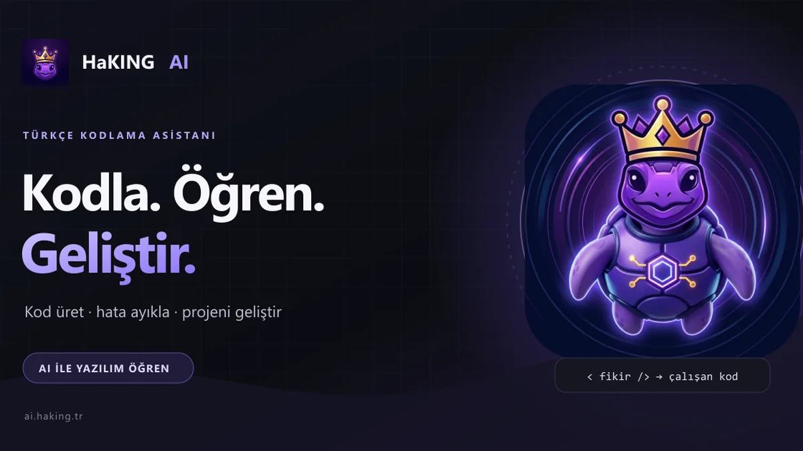
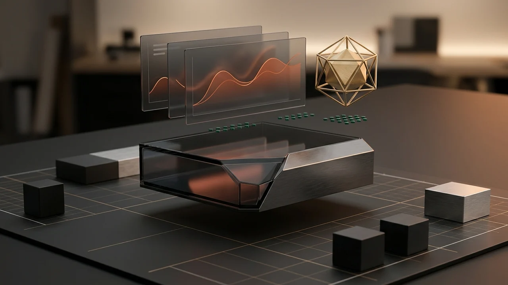
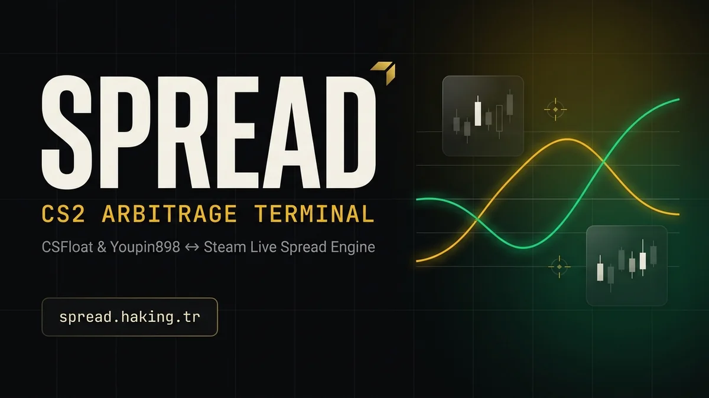
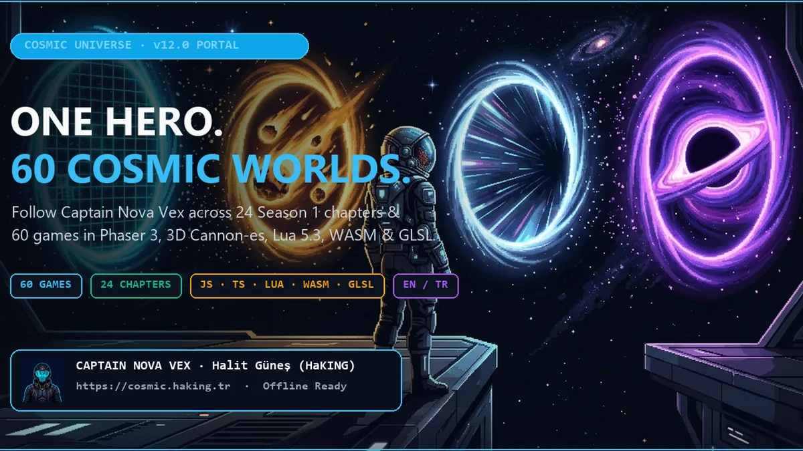
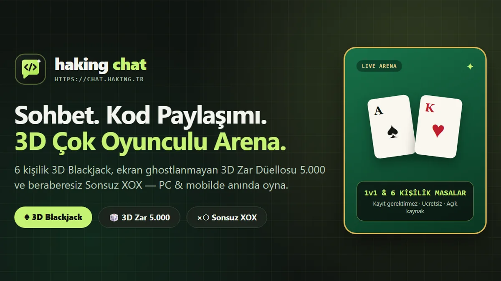
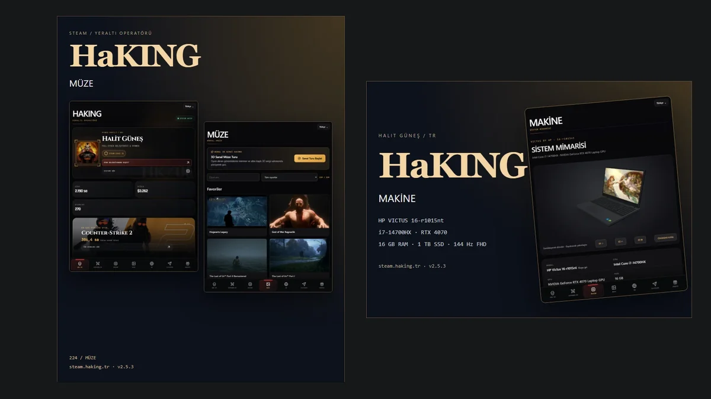

v1.19.2HaKING AI
SSE akışlı Türkçe yazılım asistanı, yapılandırılmış Prompt Modu ve Tavily araştırmalı Çılgın Mod.
FastAPISSE AkışıCloudflare Workers
HaKING; yapay zekâ asistanlarından CS2 nicel arbitraj terminallerine, tarayıcı eklentilerinden WebGL 3D deneyimlere kadar 15 açık kaynak GitHub projesini, çalışan canlı servislerini ve arkasındaki mimari kararları bir araya getiren bağımsız teknoloji yayınıdır.

HaKING AI artık yalnızca sohbet etmiyor: Prompt Modu ile Codex ve diğer AI agentları için görev kartı çıkarıyor, eksik kısıtları ücretsiz keşif sorularıyla netleştiriyor, alan adı ve altyapı çelişkilerini bağımsız denetimden geçirip kopyalanabilir teknik prompt üretiyor.
prompt_state) ile sıfır kural kaybı
Küçük denemeler değil; canlı alt alan adlarıyla yayında olan, belgelenmiş ve aktif geliştirilen büyük public GitHub projelerim.

v1.19.2SSE akışlı Türkçe yazılım asistanı, yapılandırılmış Prompt Modu ve Tavily araştırmalı Çılgın Mod.

V11.16.000+ skin ve 354+ Doppler fazıyla sıfır kayıtlı, açık kaynak CS2 çift yönlü arbitraj ve risk terminali.

v12.060 oynanabilir uzay temalı tarayıcı oyunu ve 24 bölümlük Captain Nova Vex hikâye modunu sunan arcade portalı.
 v0.1.0
v0.1.0
3D Dust2 Spray Arenası, 670+ pro e-spor crosshair veritabanı, canlı Viewmodel ve Autoexec yapılandırma paketi.

v2.0.2Gerçek zamanlı geliştirici sohbeti, sesli oda ve sunucu doğrulamalı 3D Okey, Tavla, Satranç & masa oyunları.
 v0.11.5
v0.11.5
Türkçe oyun yamaları, çeviri projeleri ve topluluk modları için modern React/Vite + Express/Neon platformu.

v2.5.3Canlı Steam kütüphane telemetrisi, etkileşimli Three.js 3D HP Victus 16 modeli ve 20 dilli 3D Müze vitrini.
 v1.0.6
v1.0.6
6.000+ HEX renk araması, OKLCH 50–950 tema üretici, WCAG kontrast denetimi ve DTCG/CSS token dışa aktarımı.
 v1.1.4
v1.1.4
7 QR veri türü, 2048px PNG/SVG çıktısı ve cihaz içi kamera/görsel taraması sunan gizlilik odaklı web + eklenti paketi.
Bu kategoride öne çıkan proje bulunamadı; tüm 15 proje için Proje Kataloğu sayfasına geçebilirsiniz.
Her vaka analizi gerçek bir üretim probleminden başlar; kod sınırlarını, veri akışını, performans darboğazlarını ve bilinen kısıtları şeffaf biçimde belgeler.
Tarayıcı ön yüzü ile model sağlayıcıları arasında nasıl güvenli bir servis sınırı kurdum? SSE akış gecikmesi, Groq/Gemini yönlendirme, ortak kredi muhasebesi ve Prompt Modu mimarisi.
CS2 arbitraj hesaplayıcıları neden sıkça hayali kâr gösterir? Valve’ın cent tabanlı kesinti formülü, 7g/30g satış geçmişi ve Tekli vs. Sepet Meta-Hakem algoritmasının arkasındaki matematik.
Klasik Okey 3D, 101 Okey 3D, Tavla, Satranç ve sesli oda özelliklerini barındıran Haking Chat’te gizli el güvenliği, sıra senkronizasyonu ve oda yaşam döngüsü nasıl tasarlandı?
Dil modellerinin maksimum çıkış token sınırına veya ağ kesintisine takılan kod yanıtlarını bozmadan, tekrar üretmeden ve sözdizimi hatası doğurmadan nasıl tamamlarsınız?
Manifest V3 izin disiplini, çoklu tarayıcı derleme hattı ve çevrimdışı PWA hesaplama doğruluğu: üç farklı günlük aracın ortak mühendislik temelleri.
AI akış gecikmesi, ağırlıklı not hesaplama, OKLCH tasarım tokenları, QR baskı kalitesi, BM25 hibrit arama ve CS2 komisyon matematiği üzerine rehberler.
Vize, ödev, proje ve final ağırlıklarıyla gerçek dönem sonu ortalaması nasıl hesaplanır? Sık yapılan 5 hesaplama hatası ve canlı hedef final simülatörü.
Sunucusuz soğuk başlangıç, TLS el sıkışması, model kuyruğu ve akış tamponlaması arasındaki farkları ayırarak sohbet uygulamalarında ilk kelime süresini iyileştirme rehberi.
HaKING 3D Vault, CS2 Studio Dust2 Spray Arenası ve Haking Chat 3D masa oyunlarını geliştirirken edindiğim WebGL render bütçesi, ışıklandırma ve mobil uyumluluk dersleri.
Yıl içi %40 içinde birden fazla ödev, kısa sınav ve proje bulunan üniversite derslerinde efektif ağırlık dönüşümü ve dönem boyu takip stratejisi.
Counter-Strike 2’de kalıcı autoexec.cfg nasıl hazırlanır, nişangâh kontrastı harita ışığına göre nasıl seçilir ve CS2 Studio ile tüm ayarlar tek dosyada nasıl dışa aktarılır?
CS2 alım-satım işlemlerinde yüzdelik ve sabit komisyonlar, takas koruma kilidi ve gerçekleşmiş vs. tahmini kâr takibi neden ayrı kayıt altına alınmalıdır?
İstanbul Kültür Üniversitesi Bilgisayar Programcılığı öğrencisi ve bağımsız yazılım geliştiriciyim. HaKING çatısı altında günlük problemleri çözen, hızlı açılan, veri gizliliğine saygılı ve açık kaynaklı web ürünleri geliştiriyorum.
Bir projeyi yayına almak benim için işin yalnızca yarısı: o ürünü kurarken hangi mimari takası yaptığımı, hangi performans sınırına çarptığımı ve kullanıcıların aynı problemleri nasıl çözebileceğini haking.tr üzerinde derin mühendislik yazılarıyla paylaşıyorum.
Modern HTML5, anlamsal CSS tokenları, sıfır bağımlılıklı JavaScript, Astro, React/Vite ve erişilebilir PWA uygulamaları.
Python/FastAPI, SSE akışı, Node.js + Socket.IO, Cloudflare Workers, Neon PostgreSQL ve çoklu LLM yönlendirme.
Three.js donanım ve müze sahneleri, HTML5 Canvas oyun motorları ve 60+ FPS duyarlı etkileşim katmanları.
Chrome, Edge ve Firefox için minimum izinli, cihaz içi çalışan Manifest V3 eklentileri ve mağaza dağıtımı.
İnteraktif proje kapsam oluşturucuyla ihtiyacını 2 dakikada netleştir; teknik mimari, zaman planı ve teslimat adımlarını birlikte değerlendirelim.